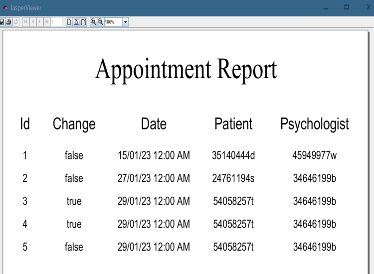

This window allows you to carry out Basic maintenance of appointment data. The user will be able to create, update, delete and exit from the appointment window. You can also generate a report containing a list of the appointments with their corresponding data.
To create a appointments you must enter Date, Patient DNI, Psychologist DNI in input corresponding fields. You can select the appointment Change if you want to change appointment. you must press the Create button to create the appointments. If no error occurs, the appointments will be created and appear in the appointments table displayed in the window.
Update appointmentsTo update the data of a appointments, you must first select the appointments by clicking on the desired row of the users table. The input fields of the window will be informed with the data of the selected appointments. These fields can be use to update appointments data. Once the previous actions have been carried out, you must press the Update button to finish the operation. If no error occurs, the data will be update of the appointments and the updated data of the appointments will appear in the table of appointments that is shows in the window.
Delete appointmentsTo delete a appointments you must select the appointments to delete by clicking on the desired row of the appointments table. Then click on the button Delete, and you will be prompted for confirmation to delete the appointments. If you confirm the deletion and no error occurs, the appointments will be deleted and updated the appointments table displayed in the window.
Print list of appointmentsPressing the Print button will open a window where you can see a document
which contains a list of appointments that exist in the application:

Using the buttons at the top of the window you can print or store the report.
Pressing the Exit button will close the application.
HelpBy clicking the Help button you will see this help document.